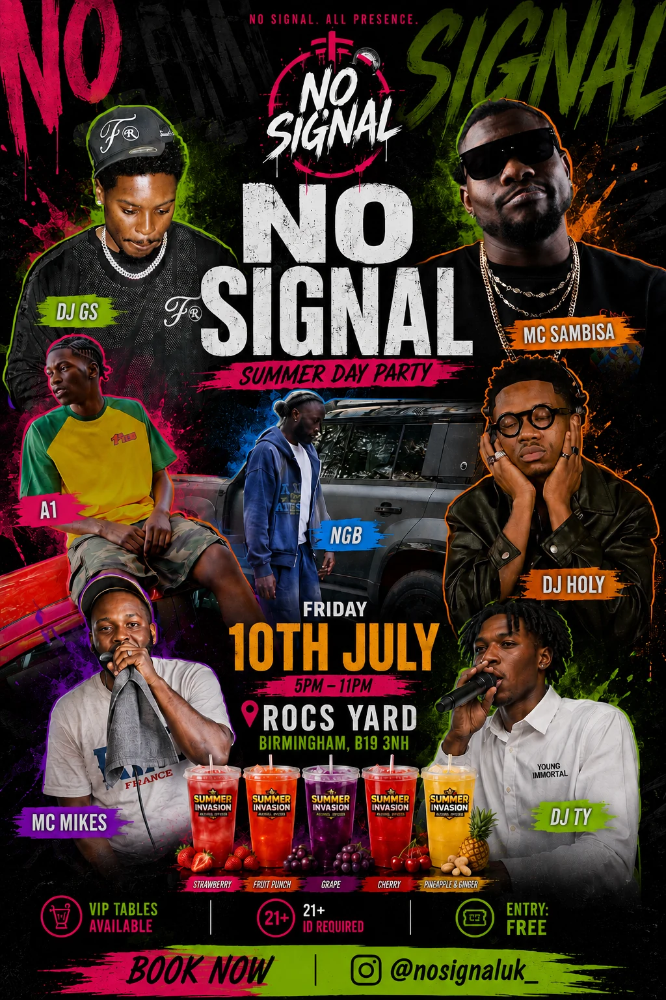
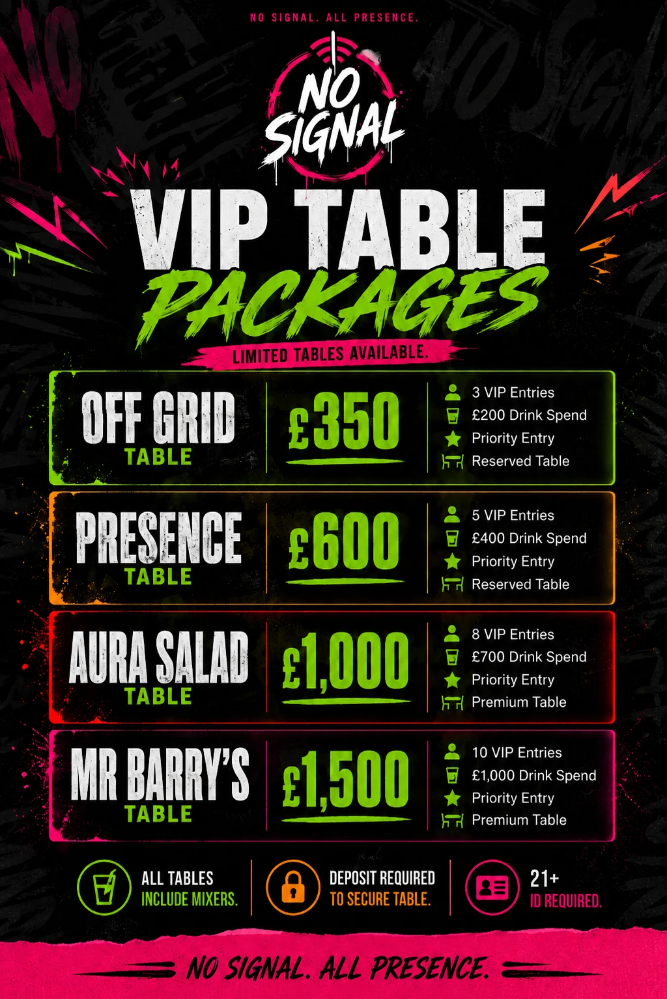
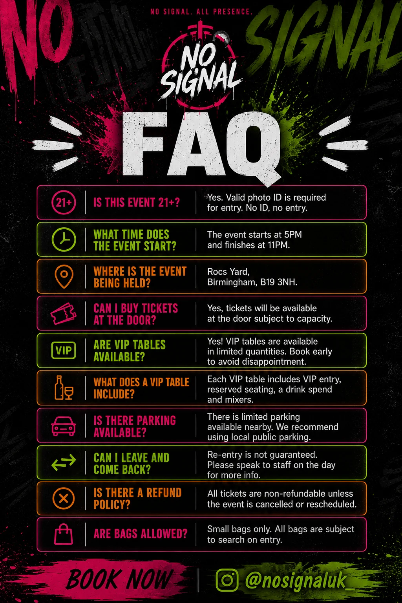

All projects
Project · Event Campaign Design
No Signal Event Campaign
A high-energy visual campaign created for a Birmingham music event, bringing the event announcement, VIP packages and essential guest information into one consistent identity.

Project overview
One visual language across the event campaign
The campaign was designed for No Signal, an event organiser, and includes three coordinated promotional assets: the main event poster, a VIP table package guide and an FAQ design for attendees.
Bold typography, neon colour accents, layered artist imagery and a dark grunge background create an energetic nightlife aesthetic while keeping event details structured and readable.
RoleGraphic Designer
Deliverables3 campaign assets
LocationBirmingham event
Campaign deliverables
No Signal visual campaign
Select any design to view the complete artwork at full size.


Next collection
View collection